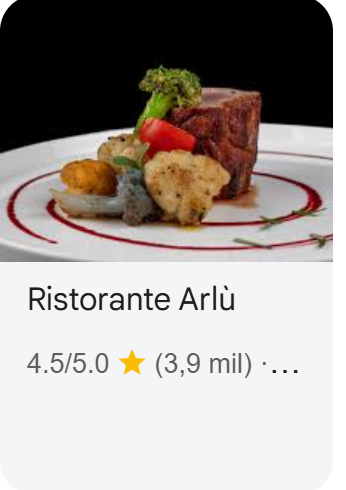
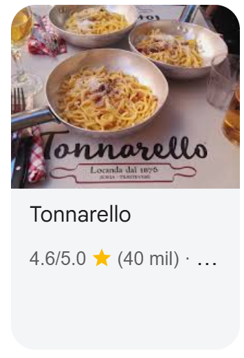

GASTRONOMÍA
Roma es una de las ciudades más conocidas por su gastronomía.
Como muchos sabrán, es la ciudad de la pasta y la pizza, pero también triunfa en otros platos parecidos, así como las focacias, las tostas de tomate y la carne.
Un dato muy curioso que no mucha gente sabe es que en Roma son muy típicas las alcachofas. No puedes irte sin probarlas.
A continuación presentamos una serie de los mejores restaurantes de Roma, con puntuaciones por encima de 4.5 estrellas, para que vivas la experiencia al completo y disfrutes de nuestra ciudad.



TRANSPORTE